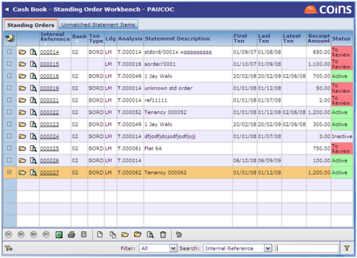
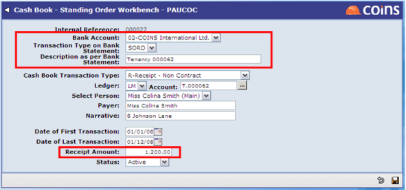

Details of a letting's standing order can be setup using Standing Order Workbench in

On adding/updating a standing order the following details are required:

It is important to note that the fields in the red boxes above are used to match the standing order to the
Note adding a standing order via
Also creating a standing order in Lettings Workbench will also create an entry in the